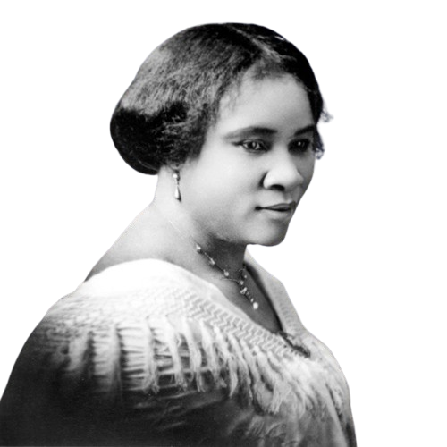
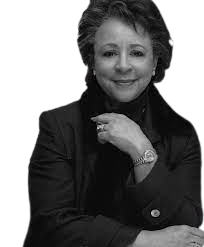
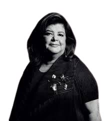
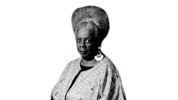
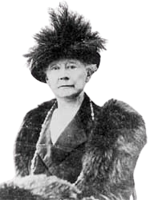
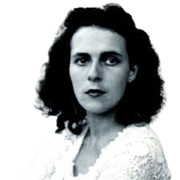

CONHEÇA ALGUNS DOS DESTAQUES
Rosa Parks

Rosa Parks (1913-2005) foi uma ativista do movimento dos direitos civis dos negros nos Estados Unidos. No dia 1 de dezembro de 1955, Rosa entrou para a história por se negar a ceder a um branco o seu assento em um ônibus em Montgomery, no Alabama.

Anne Frank
Anne Frank (1929-1945) foi uma jovem judia vítima do nazismo. Morreu no campo de concentração de Bergen-Belsen, na Alemanha, deixando escrito um diário que foi publicado por seu pai, um sobrevivente do campo de concentração de Auschwitz (Polônia), intitulado "O Diário de Anne Frank".
MARIE CURIE

Marie Curie foi uma cientista excepcional cujas contribuições revolucionaram a ciência. Nascida na Polônia em 1867, ela foi a primeira mulher a receber um Prêmio Nobel e a única a ganhar em duas áreas diferentes: Física e Química.
Valentina Tereshkova

Valentina Tereshkova foi uma cosmonauta soviética que ficou conhecida como a primeira mulher a ir ao espaço. Ela tripulou a Vostok 6, em 1963, permanecendo no espaço por 71 horas e realizando 48 voltas na Terra.
Chien-Shiung Wu

Em 1957, demonstrou a teoria de Lee e Yang. Eles propuseram que a paridade teria uma falha e que não seria verdadeira para interações subatômicas de força fraca. Além disso, Wu, com experimentos, provou que as partículas mésons K violavam o princípio da paridade [1, 2, 4].
Madam C. J. Walker
Madam C. J. Walker não apenas construiu um império de negócios, mas também empoderou milhares de mulheres negras ao fornecer-lhes oportunidades econômicas e de independência financeira. Sua abordagem inovadora para o marketing e distribuição de produtos de cuidados com os cabelos não apenas transformou a indústria da beleza, mas também desafiou as normas sociais da época.
Sheila Johnson
Sheila Johnson quebrou barreiras como a primeira mulher negra a se tornar bilionária nos Estados Unidos. Sua visão e liderança na co-fundação da Black Entertainment Network (BET) não apenas revolucionaram a indústria do entretenimento, mas também deram voz e representação significativa à comunidade negra na mídia.
Luiza Helena Trajano Inácio Rodrigues
Luiza Helena Trajano não apenas transformou o Magazine Luiza em uma potência do varejo, mas também usou sua plataforma para promover causas sociais e liderar movimentos para o avanço das mulheres no mundo dos negócios.
Conceição Evaristo
Conceição Evaristo é uma das maiores personalidades da literatura contemporânea feminina brasileira, homenageada como Personalidade Literária do Ano pelo Prêmio Jabuti em 2019. Suas obras resgatam a ancestralidade e recuperam a genealogia "negro-brasileira", retratando o cotidiano das mulheres negras e desafiando estereótipos e marginalização.
Mary Cassatt
Mary Cassatt desafiou as convenções artísticas de sua época ao se tornar uma figura proeminente no movimento impressionista, mesmo enfrentando discriminação por ser mulher.
Leonora Carrington
Leonora Carrington desafiou as expectativas sociais e os limites da imaginação com suas obras surrealistas inovadoras. Sua arte não apenas explorou o subconsciente e o mundo dos sonhos, mas também abordou questões de identidade, poder e transformação. Seu legado continua a inspirar artistas a desafiar convenções e a explorar novos horizontes na arte.